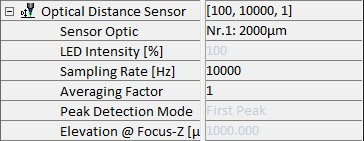

|
光学距离传感器
|
光学距离传感器参数组包含控制共聚焦色差传感器（CCS）的参数。
更多信息（操作指南）：

传感器光学件
使用此参数可以选择使用的传感器，从而加载其校准。通常情况下只安装一个传感器。此处显示传感器范围。
LED 强度 [%]
取决于硬件，为只读值。显示 MicroEpsilon 控制器内部 LED 的 LED 强度。始终根据相应的样品调整此值。状态部分将显示当前 CCS 强度，应高于 1 % 且低于 100 %。
采样率 [Hz]
控制 CCS CCD 芯片的积分时间。始终建议使用最高的可能采样率（因为较低采样率/较长积分时间会导致暗校准错误）。
平均因子
高程值将被平均。
峰值检测模式
取决于硬件，为只读值。定义传感器如何从光谱计算高程。
最高峰值
用于不透明样品。
第一峰值
用于透明样品。使用此模式时要小心，因为出错的可能性更高（例如，有时噪声被解释为第一峰值）。
焦点 Z 处高程 [µm]
只读参数，应显示传感器范围的一半。
校准
传感器校准的参数。
暗校准
此按钮启动暗校准。开始前确保 CCS 的光被阻挡。